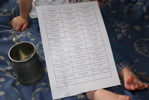
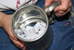
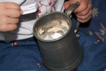

Tempest Twins
The Three Buccaneers
Sunday, 25 May 2008
Magie The Vampire
Thursday, 17 April 2008
vampire "the vampire kiss" is the pic that i want to replace the treasure chest with". "thank u very much! i hope everybody likes it unfortunately i cannot send my other drawings cos i need them for my portfolio that's why I'm afraid to send them..."
Drawings
Saturday, 12 April 2008
"I just want to ask another thing if it isn't too bold how can I change my pic i mean the treasure chest into something more characteristic? and oh I made some drawings of vampirates and I thought that you would be interested in seing them but i have no idea how to send them"
Answer:
I just pick a random picture, if I can link it to your name or job I do. Just tell me what you would like or send me a picture and I will make it black and white and a square. As for pictures, all electronic artwork (and your photos) can go under the lookalikes pages. So far I have Tempest Twins, Lorcan, Sidorio, Others Characters and Crew. Unless you just want to do a range of black and white squares, then I can use them for crew pictures and comments. To send them, just used the email address I answer your messages with.
You Tube
Thursday, 10 April 2008
Updates
Thursday, 03 April 2008
Welcome One And All
Monday, 31 March 2008
Also our old friends from: Argentina, Armenia, Australia, Austria, Belgium, Brazil, Canada, China, Cocos (Keeling) Islands, Cyprus, Czech Republic, Denmark, France, Germany, India, Ireland, Israel, Italy, Japan, Luxembourg, Mexico, Netherlands, New Zealand (Aotearoa), Norway, Poland, Portugal, Romania, Singapore, Slovak Republic, Spain, Sweden, Thailand, Tonga, Tuvalu (Polynesian Island), Ukraine, United Kingdom, Uruguay and of course the United States (Commercial, Educational and at home).
Thank you for reading our pages, contributing and sticking pins in the frappr map. Also it might be interested to know that the Tempest Twins website has had more hits from nocturn1.proboards56.com/index.cgi than www.google.co.uk/search so far this month.
Tempest Twins Competition
Saturday, 08 March 2008
As before I asked my pinkie Swabbie Calico Bess Flint for help. (Sorry the fourth entry was not in a decent state when she let us have it to photograph.)
First prize a signed copy of Blood Captain and a postcard of Lorcan Furey
- Won by Notorious Black Barts Daughter (Dirty Dolphin Page)
Second prize a signed Dead Deep
- Won by Magie The Vampirate (Film or TV Page)
Third prize a signed Dead Deep
- Won by Sarah The Vampire (News/Praise Page)
Fourth prize a postcard of Lorcan Furey.
- Won by Duck's Foot Darcy (Favourites Page)

No-name Vampirates Fan Site.
Monday, 03 March 2008
I received an email response from the new Vampirates fan site. Apparently it does not have a name, so that might explain why no one knows what to cal it. Also I get the feeling that the film projects take priority there.
"The website / community doesn't have a name. its down and non existent because the forum collapsed on itself, I'm going to have to find a friend to code a forum and website for me. and amongst film projects at the moment its a bit hectic.
and as for the website not changing for years, its because we said we were in the process of building a wider community since i was surprised at the amount of people joining. so we're working on expanding i guess you could say.
by the way, just call me kieran.
fair winds & goodnight
kieran"
"The website / community doesn't have a name. its down and non existent because the forum collapsed on itself, I'm going to have to find a friend to code a forum and website for me. and amongst film projects at the moment its a bit hectic.
and as for the website not changing for years, its because we said we were in the process of building a wider community since i was surprised at the amount of people joining. so we're working on expanding i guess you could say.
by the way, just call me kieran.
fair winds & goodnight
kieran"
Characters Page
Wednesday, 27 February 2008
Thank you to our new Purser, Bright Court for reminding me I have not finished the Characters page. "I found your website a while ago and found the character descriptions useful. Though there's something you could add to the descriptions of Grace and Connor. They both have auburn hair. It mentions it in 'Blood Captain' ..."
Favourites Page
Saturday, 23 February 2008
Message: my fav character is Lorcan furey he is described to be so nice and kind he's eyes i believe is what sedeses you!
Sorry
Wednesday, 20 February 2008
If you find any other link not working properly, please tell me.
Book Reviews
Monday, 18 February 2008
Visitors
Wednesday, 13 February 2008
Also our old friends from: Argentina, Armenia, Australia, Austria, Belgium, Brazil, Canada, China, Cocos (Keeling) Islands, Cyprus, Czech Republic, Denmark, France, Germany, India, Ireland, Israel, Italy, Japan, Luxembourg, Mexico, Netherlands, New Zealand (Aotearoa), Norway, Poland, Portugal, Romania, Singapore, Slovak Republic, Spain, Sweden, Thailand, Tonga, Tuvalu (Polynesian Island), Ukraine, United Kingdom and of course the United States (Commercial, Educational and at home).
Thank you for reading our pages, contributing and sticking pins in the frappr map.
The Dirty Dolphin
Wednesday, 06 February 2008
Visitors
Monday, 04 February 2008
mahalo
Wednesday, 30 January 2008
Links
Wednesday, 30 January 2008
I did not think my links / square buttons were really obvious.
I hope you now agree they are, as they now have a link border on two sides.
I hope you now agree they are, as they now have a link border on two sides.
HTML and CSS
Wednesday, 30 January 2008
Competition Time
Thursday, 17 January 2008
As before I am willing to put one entry into the tankard, per crew member, per page you have contributed on.
Entries are only valid if I have a way of contacting you back, by a valid email address (or if agreed in the past via The Nocturn message centre). The page excluded from this, is the frappr map on the where page, as this is an external map shown on the Tempest Twins pages, which I have little control over. For the crew page, if you have written about your character (ie it is in quote marks) it will be included as a contribution. For the blog, you are welcome to send in contributions, I will post any I believe are relevant, any sent since the beginning of the year will be included as a contribution.
Closing date is the 7th March so you should get the book by Easter, where ever in the world you are. I will email you if you are the winner asking for your name and address.
If you are under sixteen please get a parents or guardians permission before sending anything in to any website, especially pictures.
A little HTML
Monday, 14 January 2008
Frappr Map
Thursday, 10 January 2008
Still in the Christmas mood?
Wednesday, 09 January 2008
What do you get if you cross a vampire and a snowman?
Frost Bite.
Did you hear of any good pirate or vampire cracker jokes over Christmas?
From Notorious Black Bart's Daughter
Wednesday, 02 January 2008
Just to say a very happy new year to all the buddy vampirates crew!!!!
Vampirate Fans From Around The World.
Tuesday, 01 January 2008
So far we have had hits from: Argentina, Armenia, Australia, Austria, Brazil, Canada, China, Cocos (Keeling) Islands, Czech Republic, Denmark, France, Germany, India, Ireland, Israel, Italy, Japan, Luxembourg, Mexico, Netherlands, New Zealand (Aotearoa), Poland, Portugal, Romania, Singapore, Slovak Republic, Spain, Sweden, Thailand, Tonga, Tuvalu (Polynesian Island), Ukraine, United Kingdom and of course the United States (Commercial, Educational and at home). Thank you for reading our pages and contributing.